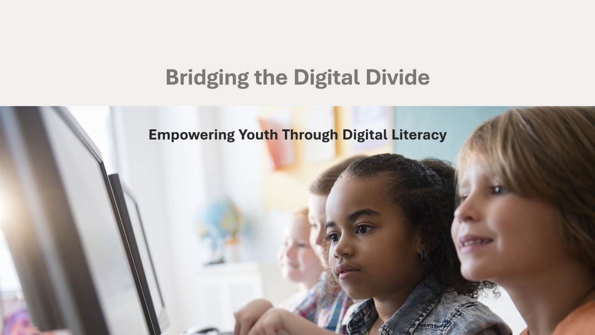
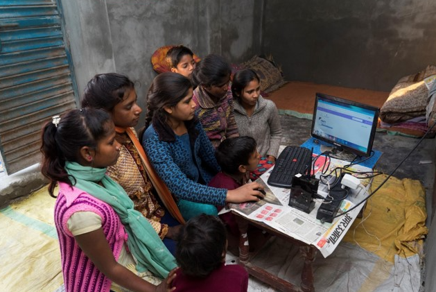

As education becomes increasingly digitized, it’s tempting to believe that simply providing students with technology is enough to level the playing field. But a deeper look reveals a different story: access to digital tools alone is not sufficient to bridge the opportunity gap. A recent study by Dr. Xin Wei from Digital Promise reveals the real issue lies in how effectively different groups of students use these tools. The findings show a troubling digital divide in how effectively different groups of students use technology...

We aim to provide equitable access to technology and digital literacy programs. By closing the digital gap, we can create opportunities in education, employment, and social participation, ensuring that underserved communities are not left behind in the digital age.
Digitalization is transforming underserved communities, providing new opportunities for economic growth, education, and social inclusion. Our programs bring technology to these communities, allowing them to participate in the digital economy and ensuring they are not excluded from the modern world.
